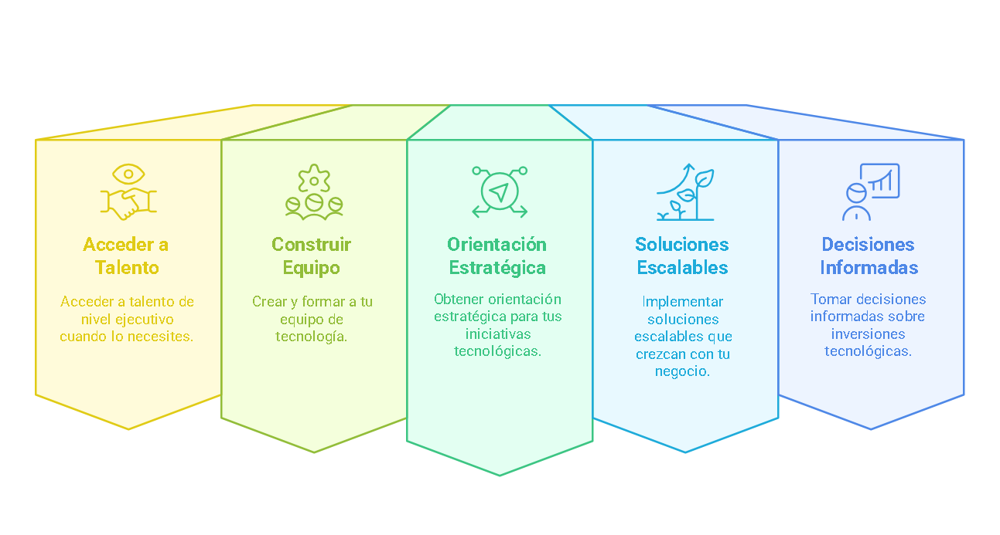

Fractional CTO
Liderazgo tecnológico a medida
En el mundo digital actual, la tecnología es un componente crucial para el éxito de cualquier negocio. Sin embargo, para startups emergentes y PyMEs, contratar un Director Tecnológico (CTO) a tiempo completo puede representar un desafío financiero significativo. Aquí es donde entra en juego el concepto de Fractional CTO.
¿Qué es exactamente un Fractional CTO?
Un Fractional CTO (Chief Technology Officer Fraccional) es un profesional tecnológico experimentado que ofrece sus servicios y conocimientos a tiempo parcial, según las necesidades específicas de su empresa. Actúa como un socio estratégico que brinda liderazgo tecnológico sin el compromiso financiero de una contratación a tiempo completo.
En esencia, un Fractional CTO le permite:
¿Por qué su startup o PyME necesita un Fractional CTO?
- Experiencia de nivel ejecutivo a costo accesible: Obtenga acceso a un profesional con años de experiencia en liderazgo tecnológico sin el costo de un salario ejecutivo a tiempo completo, reduciendo sus gastos hasta en un 70%.
- Escalabilidad según sus necesidades: Ajuste las horas y servicios según las necesidades puntuales de su negocio. Más dedicación durante proyectos críticos, menos cuando la operación es estable.
- Toma de decisiones tecnológicas acertadas: Evite costosos errores en la selección de tecnologías y proveedores. Un Fractional CTO le ayudará a elegir las soluciones que realmente se alinean con sus objetivos de negocio.
- Aceleración de su transformación digital: Implemente nuevas tecnologías y procesos digitales con la guía de un experto, acortando los tiempos de adopción y minimizando interrupciones.
- Estrategia tecnológica alineada al negocio: Desarrolle una hoja de ruta tecnológica que responda a los objetivos de su empresa y se adapte a su presupuesto, priorizando inversiones con mayor impacto.
- Construcción y liderazgo de equipos técnicos: Reciba apoyo en la contratación, formación y gestión de su equipo técnico interno, estableciendo las bases para un crecimiento sostenible.
Servicios
Modelo de colaboración flexible
Ofreceré un enfoque personalizado que se adapte a las necesidades específicas de su empresa. Mi colaboración puede oscilar entre unas pocas horas semanales y varios días al mes, según lo que demande su proyecto en todos los aspectos de digitalización y tecnologías de la información. Me especializo en las siguientes áreas:
Gestión de Equipos
Entiendo su desafío: formar un equipo tecnológico competente dentro de su presupuesto. Con 18+ años liderando equipos distribuidos internacionalmente, puedo ayudarle a identificar talento adecuado, estructurar colaboraciones internas/externas, optimizar recursos manteniendo calidad técnica, y mentorizar al equipo. Le ofrezco construir la estructura tecnológica que necesita, con la flexibilidad presupuestaria que requiere y la calidad que su proyecto merece.
Estrategia de tecnología enfocada en su negocio
Transformo su visión empresarial en tecnología efectiva. Evalúo su infraestructura actual, defino el estado tecnológico ideal y selecciono las herramientas que mejor se adapten a su escala y presupuesto. Desarrollo un mapa de ruta claro con proyectos priorizados y le acompaño en su implementación, garantizando que cada iniciativa genere valor real para su negocio. Convierto la tecnología en un aliado estratégico que impulse su crecimiento.
Diseño de Producto
Transformo ideas en productos digitales escalables.
Transformo ideas en productos digitales que sus clientes realmente quieren usar. Aplico arquitectura de software y Design Thinking para crear soluciones escalables, desde un MVP económico hasta plataformas robustas según su crecimiento. Cada decisión se basa en datos y en la retroalimentación, para garantizar productos que resuelven problemas del mercado, mejoran la experiencia del usuario y generan ingresos sostenibles.
Experiencia
Trayectoria internacional
Con casi dos décadas de experiencia en tecnología, he liderado equipos y proyectos en múltiples países, adaptándome a diferentes culturas y entornos de trabajo. Mi experiencia abarca desde startups hasta empresas multinacionales, lo que me ha proporcionado una perspectiva única sobre cómo la tecnología puede impulsar el crecimiento empresarial.
Experiencia Global
- Portugal (Actual)
- fCTO en SmartVoting
- fCTO en MiasModa
- Chile
- Engineering Team Lead en Vacasa SpA
- Advanced Analytics Head en Option SpA
- IT Manager en TransUnion
- Colombia
- Software Development Manager en TransUnion
- Software development Manager en DataCrédito (Experian)
- Guatemala
- Regional IT Manager en TransUnion
- Costa Rica
- IT Manager en TransUnion
Áreas de Práctica
- I+D+i - Investigación, desarrollo e Innovación
- Organización y liderazgo de equipo técnico
- Diseño de productos digitales
- Desarrollo de Software ágil
- Análisis funcional y requerimientos
- Eficiencia de procesos
- Gestión de equipos técnicos
- Gestión de presupuestos de TI
- Arquitectura de softwafre
- Blockchain
- Prompt Engineering
- Cloud Computing
- Bases de datos SQL & No-SQL
Opinión
Divulgación de temas técnicos
Comparto regularmente mis ideas sobre tecnología, liderazgo y tendencias de la industria a través de artículos, conferencias y publicaciones. Mi objetivo es contribuir al diálogo sobre cómo la tecnología puede ser una fuerza positiva para las empresas y la sociedad.
Videoconferencia - Blockchain, ¿Qué es realmente?
Charla de iniciación a los mecanismos y usos básicos de blockchain para la Fundación Cultural El Cinco a las Cinco. Febrero 2025 Ver más
Artículo - Siguiendo la pista de Satoshi Nakamoto
Comentario sobre los efectos prácticos de la transparencia, la anonimicidad e inmutabilidad de la red Ethereum. Febrero, 2025. Ver más
Artículo - Blockchain: ¿Transparente o Anónima?
Explicación de la aparente contradicción entre las características de anonimicidad y transparencia en Blockchain. Ver más
Artículo - Finanzas y Blockchain: Guía Simple de TradFi, CeFi y DeFi
Pequeña introducción para entender algunas características diferenciadoras entre las nuevas modalidades de servicios financieros basados en blockchain. Enero, 2025. Ver más
Artículo - Blockchain: La paradoja de la seguridad
¿Cómo es posible que se ofrezca blockchain como un repositorio de datos ultra-seguro y sin embargo todas las semanas encontramos noticias de servicios basados en blockchain hackeados?. Enero, 2025. Ver más
Conferencia - Blockchain en entornos empresariales
Videoconferencia en español para el Segundo Congreso Internacional de Ingeniería de la Universidad Libre Seccional Cúcuta. Noviembre, 2023. Ver más
Artículo - Classical Reads on Software Development Management
Comentario sobre diversos libros clásicos sobre Desarrollo de Software y Liderazgo de Tecnología. Febrero, 2023. Ver mas
Artículo - Coronavirus, data & responsibility
Revisión de diversos casos de mala interpretación estadística de datos sobre COVID-19 en los medios, sus potenciales impactos y alternativas para interpretarlos. Marzo, 2020. Ver mas
Contáctame
¿Listo para hablar sobre su proyecto?
Si está interesado en explorar cómo puedo ayudar a su empresa a alcanzar sus objetivos tecnológicos, programemos una llamada. Podemos discutir sus desafíos actuales y cómo mi experiencia podría beneficiar a su organización.